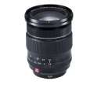

器材库 > APS画幅镜头 > XF 16-55/2.8 R LM WR

详细规格
发布日期
2015-01-07
焦距
16-55mm
等效35mm画幅焦距
24-84mm
最大光圈
f/2.8
最小光圈
f/22
镜头结构
17片/12组
非球面镜片
3片
低/超低色散镜片
3片
光圈叶片
9片
最近对焦距离
60cm, 微距30cm
最大放大倍率
0.16倍
滤镜口径
77mm
镜头卡口
Fujifilm XF
防抖
否
颜色
黑色
尺寸
83.8x106mm
重量
655g
我用美能达2015-03-19 14:454.5 分
操作性 4.50耐用性 5.00性价比 3.00解像力 5.00色彩还原 4.50机械结构 5.00
anxious2015-03-16 01:004.5 分
操作性 4.50耐用性 4.50性价比 4.00解像力 4.50色彩还原 5.00机械结构 4.50
笨笨小兔子2015-02-15 20:05
产品图 / 样片
评测 / 相关文章
- 详细内容 （存档）
- C幅标变镜皇 富士XF16-55/2.8R LM WR评测 （存档）
- ［试用］富士XF16-55/2.8R LM WR评测样张 （存档）
- ［资讯］富士XF16-55/2.8 R LM WR镜头样片 （存档）